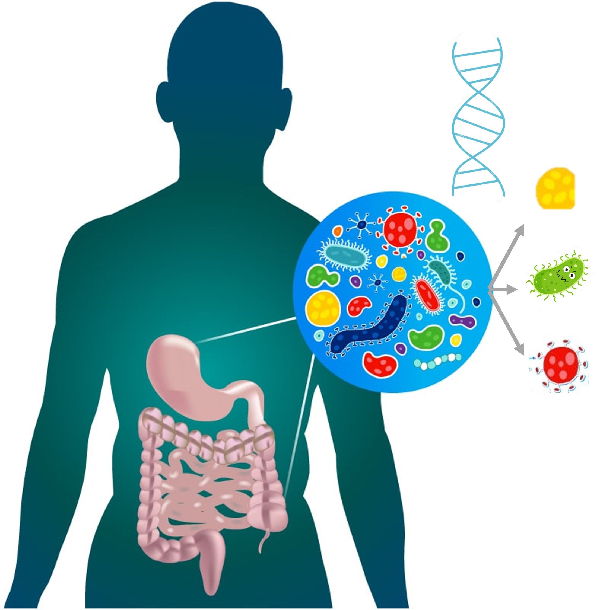
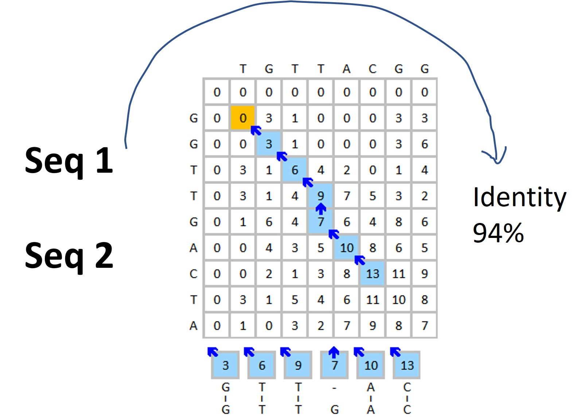

Research Interests
Research fields: Machine Learning, Bioinformatics, Microbial Genomics, Bacterial Pathogenesis.
My research focuses on developing and applying innovative bioinformatics tools and machine learning models to advance the understanding of microbial genomics and improve human health and the environment leveraging next-generation sequencing and big data.
About Me
Summary
Interdisciplinary Background: Ph.D. in Microbial Genomics with extensive experience in bioinformatics. Expert in NGS data analysis, machine learning, and development of bioinformatics tools.
Research Excellence: Published 70+ papers in reputed journals with total citation of 3400. Notable publications in Microbiome (IF 15, citation 250).
Editorship in Journals: Academic Editor in the journal Microorganisms. Research Topic Editor in the journal Frontiers in Microbiology.
Management of Facilities: Maintaining sequencers (Illumina MiSeq and NextSeq), high-performance computer (HPC) facilities and bioinformatics web servers.
Education
- Ph.D. in Microbial Genomics, Hong Kong University of Science and Technology (2011-2015)
- M.Sc. in Microbiology, Beijing Institute of Microbiology and Epidemiology (2008-2011)
- B.Sc. in Biological Science, Ludong University (2004-2008)
Genomic and Metagenomic sequencing and analysis of microbiomes from marine environments.
Genomics and evolution of bacterial pathogens for human diseases.
Working Experience
- Research Scientist, High Throughput Sequencing (HTS) Initiative, Institute for Food Safety and Health, Illinois Institute of Technology (2019-Present)
- Postdoctoral Research Associate, Institute for Environmental Genomics, University of Oklahoma (2016-2019)
Focusing on developing bioinformatics tools, pipelines and machine learning tools; Investigating bacterial pathogenesis for human diseases. Maintaining sequencing and bioinformatics facilities.
Conducted bioinformatics analysis on genomes and metagenomes of environmental microbiomes. Developed automatic bioinformatics pipelines for amplicon, genome, and metagenome sequence data analysis.
Publications
In fields of Microbiology, Genomics, and Bioinformatics. Total citation: 3400. H-index: 34. Google Scholar
Current Lab
Our lab is called High Throughput Sequencing Initiative (HTSI), affilicated with the Institute for Food Safety and Health, Illinois Tech. We mainly focuses on microbiological research and bioinformatics tool development. We are interested in applying AI and machine learning in solving biological problems using big data.
Please feel free if you have any comments on our ongoing projects or any ideas that we can collaborate on. We will be very happy to discuss on it.
Lab Members

Behzad Imanian, PhD
Research Assistant Professor, Lead
Renmao "Tim" Tian, PhD
Research Scientist
Project Highlights
PlasmidHunter
PlasmidHunter is a tool for accurate and fast prediction of plasmid sequences using gene content profile and machine learning.
VBCG
VBCG is a tool for phylogenomic analysis using 20 validated bacterial core genes with high fidelity and resolution.
Patescibacteria Research
This project investigated the adaptation of the recently defined, the largest superphylum Patescibacteria (also called CPR) to groundwater environments, driving their genome simplicity.
Ongoing Projects
ML-MSE: Machine Learning-assisted Medium Sequenctial Enrichment
A novel technology to isolate target bacteria from environmental samples using machine learning.
MetaRealm
Using machine learning to predict prokaryotic, eukaryotic and virus sequences from metagenomic data for improved gut microbiome biomedical preprocessing.
RAPIDS - Rapid Alignment-free Prediction of Induced Database Similarity
Using machine learning to predict sequence similarity without alignment, to revolutionize database search process.
Comments and collaborations are very welcome!